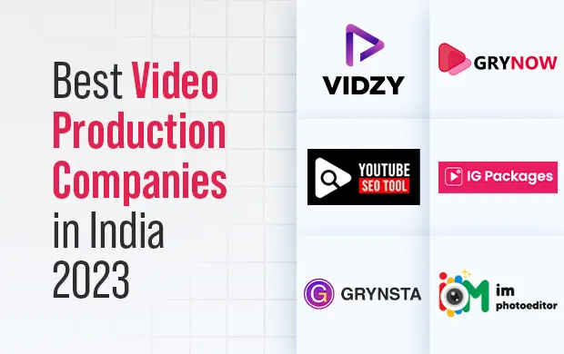

Best Video Production Companies in India (2023)
Nowadays, video content has taken over almost every niche market, whether it's fashion, fitness, or high-tech. Today, visuals play an extremely crucial role in captivating the audience’s attention, especially in the social media domain. For instance, we are more drawn towards Komal Pandey’s different style reels than the still shots she posts of her outfits.
That's the impact of video in our lives, where visual content has taken over the majority of areas, including entertainment, news, shopping, and so on. And the reason this is happening is because people tend to remember things distinctly based on what they see rather than what they read.
That’s why we still recognise the advertisements we used to watch in our childhood. For instance, the Nirma song - most of us must distinctly remember the visuals and audio from that advertisement. That is the power of video production!
As per the data provided by Statista, in just the first quarter of 2023, online video content recorded a 92% user reach across the world. Moreover, the global video advertising market is expected to reach $326.20 billion in 2023, with a contribution of about $6.05 billion from India.
Why Is Video Production for You?
Before you skip through this section, let me tell you that these aren’t just the benefits of video products but a mini brochure of video production services you can leverage when you decide to work with the leading video production company in India.
Captivating Audiences with Vibrant Video Content
With such a massive amount of content being uploaded on the internet, videos stand out. The dynamic visuals must be attention-grabbing, including special effects, excellent animations, and motion graphics.
Evoking Emotional Connect Through Visual Storytelling
With the fusion of videos, audio, and compelling narration, you can create stories and provide an unforgettable experience to your viewers, fostering a significant bond between your brand and your target audience.
Explaining Concepts With Utmost Clarity and Visualisation
Video production allows brands to give detailed explanations of various concepts with visual examples that people can engage with and relate to. It is easy to grab things through visual representation, which also helps in better retention.
Building Interest with Behind-the-Scenes Videos
Through uploading behind-the-scenes videos and building anticipation among the viewers, they develop a sense of FOMO (fear of missing out). You can provide a little sneak peek of the video campaigns through trailers, showcasing cherished influencers. This will develop an eagerness for your content.
Enhance Engagement with Authentic Testimonials
By showcasing video testimonials of satisfied consumers, you can build a sense of trust and loyalty towards your brand and increase engagement. By self-sharing their stories, they can help you build a fresh perspective around the brand and attract new customers.
Now that we have an understanding of how video production can help your brand, let's continue with the blog. The relevance of this blog is to inform you about several video production agencies and let you decide which best video production company in India you want to work with.
List of Top 6 Video Production Companies in India
1. Vidzy
Vidzy is the top video production company in India, with ample experience in curating visually engaging content. The company works with various niche-specific influencers who have an in-depth understanding and knowledge of video production.
Vidzy has had a team of experienced professionals working in the field of video production for a long time. A group of hard-working individuals has the ability to bring your brand’s vision to life.
Going through their website, one can find their work experience in diverse niches such as fitness, finance, fashion, beauty, tech, education tech, food, funny, and travel.
Also, they offer diverse video production services, including filming and editing, to a wide range of sectors, such as social media videos, product explainer videos, video ads, demonstration videos, brand testimonial videos, corporate videos, TV commercials, 2D & 3D motion graphics, short films, and many more.
One of their happy clients, Abhishek Ranjan, who is a Marketing Data Analyst at ShareChat, says, “Vidzy Creativity and Attention to Detail Is Unmatched! Vidzy helped the Moj app with video content amplification campaigns. They helped us with the virality of new hashtags.”
Key reasons to opt for Vidzy:
- Assign personal brand manager
- On-time delivery of the opted services
- Offer research/trend-based content strategy
- Deliver quality content at affordable pricing
- Have a team of experienced creative strategists
Quality features Vidzy attains:
- Reputation for excellence with more than 8+ years of in-hand experience
- High-quality equipment and technology used for video production
- Incorporate niche-based influencers who align with the brand’s vision
- Curates content, emphasising storytelling and focusing on the target audience
- Extensive networking with 2 lakh+ influencers and content creators
- Strong client base with renowned brands, including Paytm, Puma, One Plus, Amazon, Groww, Unacademy, etc.
2. Grynow
Grynow is a leading influencer marketing agency with expertise in curating visually appealing content to help brands enhance their reach and engagement.
It provides a platform for brands and marketers to leverage influencers and content creators to market their products and services.
Grynow has a strong network of top content creators, social media influencers, artists, celebrities, vloggers, and bloggers who are experts in creating exciting video content.
They provide video production services in various niches, including fashion, beauty, finance, food, gaming, fitness & health, comedy, travel, entertainment, technology, motivation, education, automobiles, and many more.
Additionally, Grynow has been recognised by many renowned media houses, including The Print, Hindustan Times, Forbes, Mint, The Indian Express, etc., for their prominent work in the fields of influencer marketing and video production.
Key Features of India’s Largest Influencer Marketing Platform include:
- 7+ years of experience in executing 30,000+ customised video Campaigns
- Strong relationship with 1000+ renowned brands
- Networking with over 2.5 L+ Content Creators & Social Media Influencers
- Established existence in India, the US, the UK, Indonesia, the UAE, the Philippines, and the Middle East
3. YTube
YTube is a leading video production agency in India, specialising in curating innovative and entertaining videos in various niches. Through relevant knowledge and a deep understanding of all the crucial steps of video production, they have captivated many renowned brands.
The YTube team consists of passionate individuals who are keen to present no less than excellence in their work. They are storytellers who transform ideas into visual pleasures that leave lasting impacts.
The team consists of experienced writers, directors, cinematographers, and editors who will ensure an outstanding result. They make several types of content, including short-form videos, long-form videos, short films, promotional videos, music videos, etc.
Some of the key features of YTube are mentioned below:
- Expertise to produce audience-oriented visual content
- Utilise cutting-edge tools and advanced technologies
- Experience working with high-profile companies and brands
- Information of market insights and capability to utilise them
- Proficiency in providing complete video production services (Pre to Post)
4. IGPackages
IGPackages is an innovative video production agency that makes its associated businesses thrive in the realm of influencer marketing. It has strong networking with thousands of influencers and content creators, and with their help, it provides exceptional results.
It is the best video production company in India because of its excellent work in the field of video production. Through relevant expertise and creativity to produce brilliant videos that resonate with audiences, IGPackages has built a solid client base.
The company’s expertise lies primarily in making short films and documentaries that are customised as per the requirements of businesses. With advanced technical prowess and outstanding storytelling skills, IGPackages delivers visually stunning and emotionally compelling content.
Significant highlights of IGPackages include:
- Unique and innovative vision to curate personalised, visually appealing content
- Excellent storytelling skills and ability to create an impactful fusion of visuals and audio
- Offers top-quality video content that aligns with the vision and goals of the brand
- In-depth expertise in utilising advanced filming tools and trailblazing animation and editing software
5. Grynsta
Being a top video production company in India, Grynsta has made a significant impact in the market. It is run by professionals with a keen interest and expertise in animation and motion graphics.
This video production agency has reached millions of people with its outstanding visuals and graphics, which puts it ahead of its competition. It has employed many people who are excellent at what they do and continues to push the boundaries of video production.
Grynsta has expertise in developing various projects, from 2D motion graphics to advanced animations. You ask for it, and they will deliver the outcome above your expectations.
Some features of the best video production company in India are as follows:
- A team of skilled and creative professionals who are experienced
- Provides a wide range of services, right from concept building and production to post-production and delivery
- Expertise in making top-notch visuals with advanced technologies and equipment
- The team has the eyes for details and taste for perfection to create stunning video content
6. IM Photo
IM Photo is a leading video production agency in India with several years of experience in the realm of influencer marketing and video production. They have left an ever-lasting impact on the market with their mind-blowing work.
The achievements of the company highlight its ability, competency, and dedication. And the array of projects they have received from renowned brands proves their success.
IM Photo has the expertise to craft niche-specific videos, target relevant audiences, and deliver a straightforward narrative. The team members are capable of providing stunning and emotionally compelling visual content.
Key features of IM Photo include:
- Expertise in corporate, promotional, and advertisement videos
- Home to experienced team members with artistic creativity
- Curating high-quality and remarkable complete video production services
- A persuasive portfolio showcasing work with a diverse range of clients and businesses